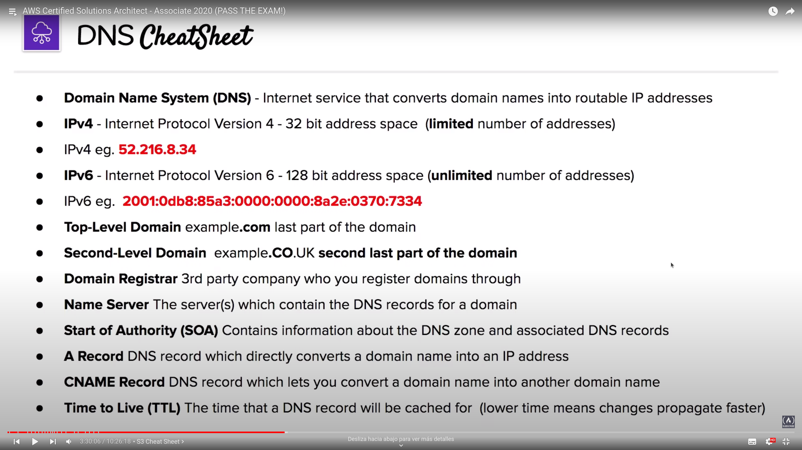
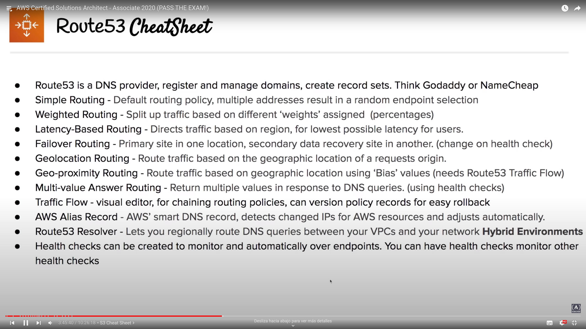

Route53¶
Introduction to IP¶
- Internet Protocol
- IP Addresses: computer identifier on a network, allows communication with it using the Internet Protocol
- Two versions:
- IPv4: 32-bit address space
- IPv6: 128-bit address space
Introduction to DNS¶
- Domain Name Service
- Translates domain names to IP addresses
- Find specific servers on the Internet depending what domain name you browse
Domain registrers¶
- Authorities who have the ability to assign domain names under on or more top-level domains
- Domain get registered through InterNIC, service provided by the Internet Corporation for Assigned Names and Numbers (ICANN), enforcing the uniqueness of domain names all over the internet.
Top-level domains¶
- Last word within a domain represents the top-level domain name
- The second word within a domain name is know as the second-level domain name
- Controlled by the Internet Assigned Numbers Authority (IANA)
- AWS has their own top level domain: .aws
Start of Authority (SOA)¶
- SOA record stores information about the domain
- A Zone file can contain only one SOA Record

Address (A) Records¶
- Allows you to convert the name of a domain directly into an IP Address
Canonical Names (CNAME) Records¶
- Used to resolve one domain name to another rather than an IP address
- Useful when you work with dynamic IPs
Name Server (NS) Records¶
- Used by top-level domain servers to direct traffic to the DNS server containing the authoritative DNS records.
- Multiple name servers can be provided for redundancy
- In AWS NS records would be pointed at the AWS servers
Time to Live (TTL)¶
- Lenght of time that a DNS record gets cached on the resolving server
- The lower the TTL, the faster that changes to DNS records will propagate across the Internet
- Measured in seconds under IPv4

Introduction to Route53¶
- Highly available and scalable cloud DNS, integrated with AWS Services
- Functionalities:
- Register and manage domains
- Create DNS routing rules
- Implement complex traffic flows
- Resolve VPCs outside AWS
- Monitoring DNS records
- Use case: get custom domain to point to your AWS Resources
Record Sets¶
- Create record sets to point naked domain and subdomains via domain records
Alias Record¶
- AWS own special record to extend DNS functionality, allowing to detect IP changes and continuously pointing that endpoint to the correct resource
- Useful whe routing traffic to AWS resources
Routing policies¶
- 7 different types available:
- Simple (default): 1 record, 1 or more IP addresses. Return IPs to the user in a random user
- Weighted: split traffic based on weights (traffic percentage), balancing the traffic through the different servers
- Latency-based: direct traffic based on the lowst network latency possible for the end-user based on region. Requires a latency resource record
- Failover: active/passive setups in situations where you want a primary site in one location and a secondary data recovery site in another. Monitor health-checks from primary site to determinate where to direct traffic
- Geolocation: direct traffic based on the geographic location of the origin of the request
- Geo-proximity: direct traffic based on the geographic location of users and AWS resources. Can route more or less traffic to a specific resource using a Bias value. You MUST use Route53 Traffic Flow in order to use it (select regions and visualize the bias)
- Multi-value: let you configure Route53 to return multiple values such as IP addresses for your web-servers, in response to DNS queries
Traffic flow¶
- Visual editor that let you create routing configurations for your resources
- Support versioning
Health Checks¶
- Checks health every 30 seconds by default, reductible to 10.
- Can initial a failover routing policy if status is returned unhealthy
- Integration with CloudWatch Alarm to notify about unhealthy status
- A health check can monitor another health checks (chain reaction)
Resolver¶
- Regional service that lets you route DNS queries between VPCs and on-premises networks
- DNS Resolution for Hybrid Environments
